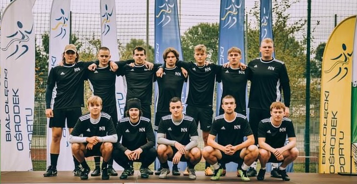
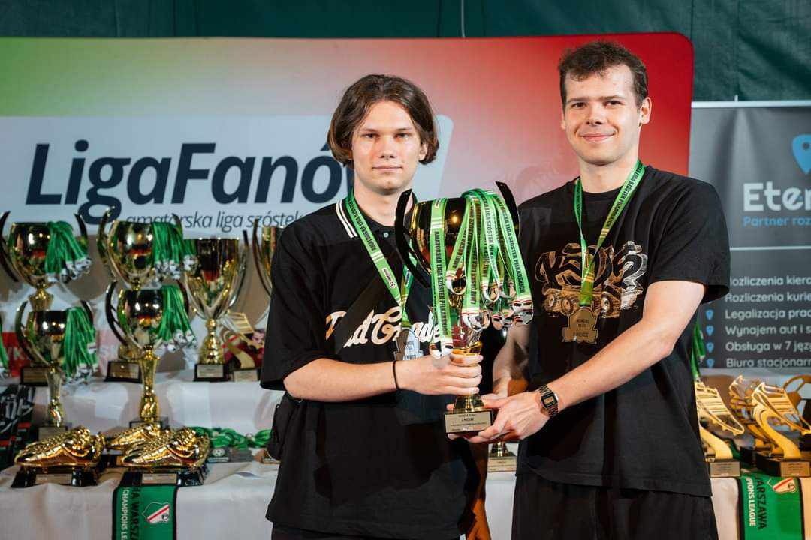

<!DOCTYPE html>
<html lang="pl-PL>
<head>

<meta http-equiv="Content-type" content="text/html; charset=UTF-8" />
<meta http-equiv="Content-Language" content="pl" />
<meta name="Author" content="Aleksander Żuk" />
<title>Piłka nożna okiem amatora</title>

<style>

#menu {
background-color:black;
color: white;
padding: 10px;
font-size: 200%;
}
#menu table{
width:100%;
}
#menu th{
padding: 15px;
background-color:darkred;
}
#menu a {
text-decoration: none;
color:white;
}

h1 { 
color: black;

font-size: 500%;
text-align:center;
padding-top: 20px;

}
p{
font-size:200%;

margin:auto;
}
</style>

<body style="background-color:lightgray;">

<div id = menu>
<table>
<tr>
<th> <a href ="gotowa strona lab1.html"> Menu </th>
<th> <a href ="Na2Nozke.html"> Na2Nóżkę </th>
<th> <a href ="PremierLeague.html"> Premier League </th>
<th> <a href ="MlodePerelki.html"> Mlode Perelki </th>
<th> <a href ="oMnie.html"> O mnie </th>
<th> <a href ="kontakt.html"> Kontakt </th>
</tr>
</table>
</div>

<h1> Na2Nóżkę <br> </h1>

<h2 style="font-size:200%"> Na drugą nóżkę to amatorska drużyna piłkarska, w której obecnie występuje na warszawskich boiskach.
Gramy w "Lidze Fanów", czyli lidze rozgrywanej systemem piłkarskich piątek. <h2>

<hr>
<p> W poprzednim sezonie debiutowaliśmy w lidze i udało nam się zakończyć sezon na wysokim, drugim miejscu.
 Przez cały sezon musieliśmy borykać się z różnymi przeciwnościami losu pokroju kontuzji, nieprzewidzianych zmian terminarzu, czy niedyspozycyjności zawodników.
Podczas oficjalnej ceremonii wręczania nagród o dziwo otrzymaliśmy puchar z nasze zasługi. Organizatorzy ligi byli widocznie zdziwieni, że zespół debiutujący w tych rozgrywkach
był w stanie postawić się doświadczonym drużynom i walczyć o lidera do końca. Na zdjęciu widoczni członkowie zarządu w tym kapitan zespołu Tymon (po lewej) oraz MVP sezonu Wicia (po prawej).
</p>


</body>
</html>
